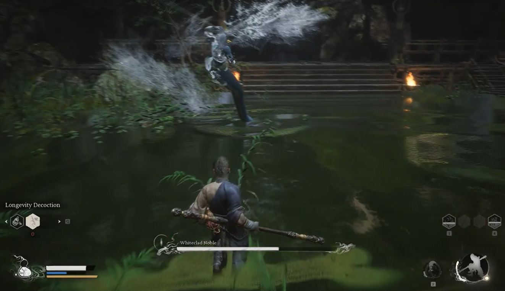
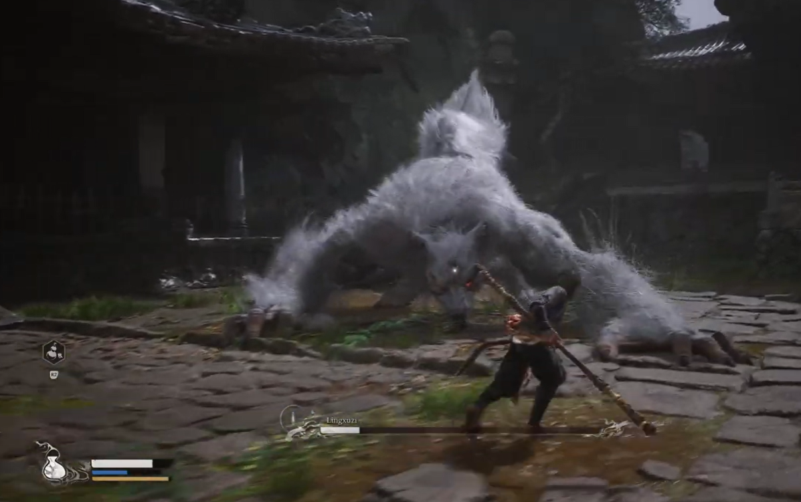
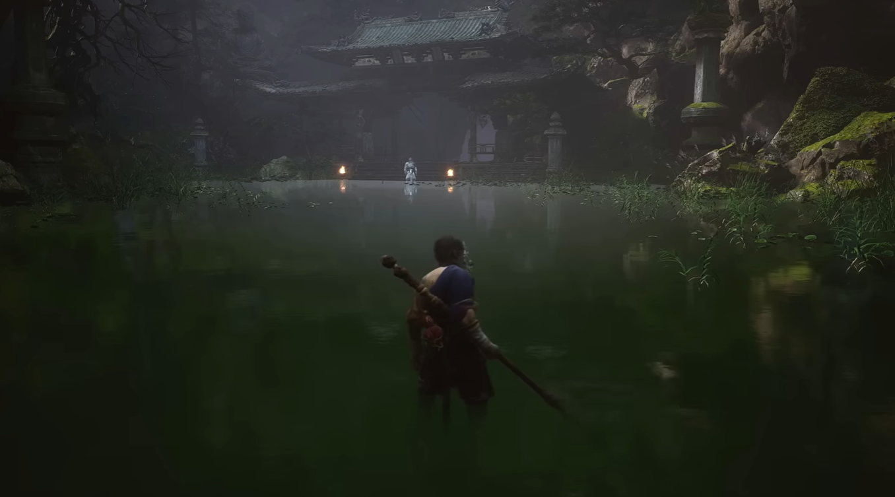

Bosque de los Lobos
Es la zona donde el juego marca el tono. Senderos estrechos, casas abandonadas y niebla constante crean una sensación de peligro permanente. Las batallas aquí suelen empezar como encuentros simples y terminar en emboscadas, obligándote a mirar el entorno y no confiarte. Es donde aprendes que el posicionamiento importa tanto como el combate.

Bosque de bambú
Visualmente es la zona más bella del capítulo, pero también engañosa. El bambú alto limita la visibilidad y hace que los combates se sientan más tensos y cerrados. Aquí destacan peleas de control y movilidad, especialmente contra enemigos que usan veneno y ayudantes. El ritmo es más táctico que agresivo.

Templo antiguo
Una zona con peso narrativo y ritual. El silencio, las estatuas y la arquitectura antigua hacen que cada combate se sienta importante. Las batallas aquí son más directas y exigentes, con jefes que prueban tu dominio del timing y la stamina. Es donde el capítulo se vuelve serio y solemne.

Zona del río
Un escenario único donde el agua cambia la percepción del combate. El espacio abierto del río favorece duelos rápidos y elegantes, como el del Noble de Túnica Blanca. Aquí todo gira en torno a lectura de movimientos, calma y precisión; un error rompe el ritmo y se paga caro.